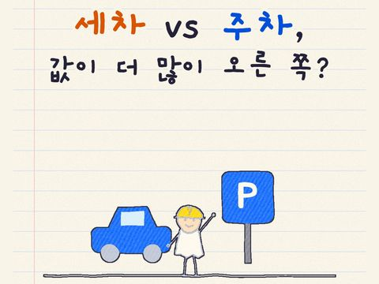
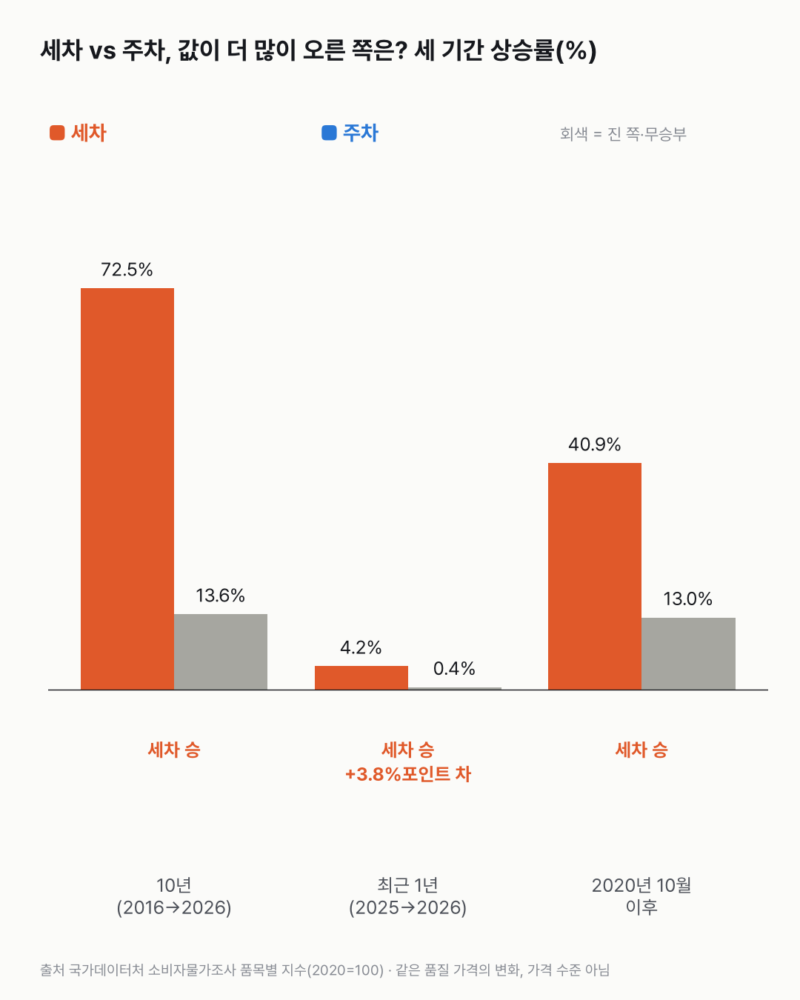
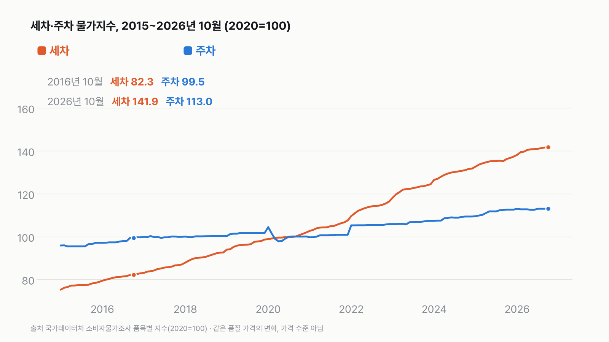
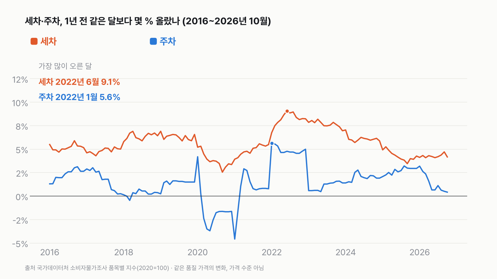
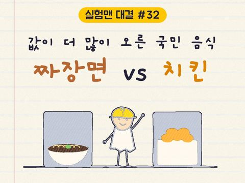
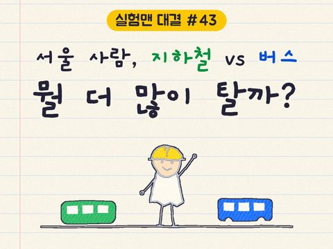
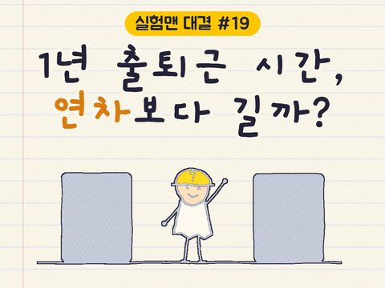

세차 vs 주차, 값이 더 많이 오른 쪽은?
세차장 한 번, 주차장 한 번. 어느 쪽 값이 더 올랐을지 먼저 골라 주세요.

독자 투표
이 대결의 규칙 자세히 (자료·판정 기준)
3줄 요약
- 차를 가진 사람의 두 지출, 세차와 주차. 값이 더 많이 오른 쪽은 어디일까요?
- 국가데이터처 소비자물가지수로 10년, 최근 1년, 2020년 10월 이후 세 기간을 같은 잣대로 견줘요.
- 상승률이 1.1배 이상 차이 나야 승부가 나요. 아니면 무승부예요.
조건과 규칙
- 자료: 국가데이터처 소비자물가조사 품목별 지수(2020 = 100) '세차료'와 '주차료', 전국, 월.
- 세 판: 10년(2016년 10월 → 2026년 10월), 최근 1년(2025년 10월 → 2026년 10월), 2020년 10월 이후(→ 2026년 10월).
- 판정: 상승률이 큰 쪽이 이겨요. 큰 쪽 ÷ 작은 쪽이 1.1배 미만이면 무승부예요. 둘 다 내렸거나 한쪽만 내렸으면 배수 대신 차이로 판정하고, 차이가 1%포인트 미만이면 무승부예요.
- 주의: 지수는 '얼마'가 아니라 '같은 품질의 값이 얼마나 변했나'예요. 세차와 주차 중 어느 쪽 값이 더 높은지는 이 자료로 말할 수 없어요.
- 이 규칙은 값을 보기 전에 정했어요.
결과 요약
세차 3:0 → 세차 값이 훨씬 더 많이 올랐어요
- 10년: 세차 72.5%, 주차 13.6%로 세차 승(5.32배).
- 최근 1년: 세차 4.2%, 주차 0.4%로 세차 승(3.8%포인트 차이).
- 2020년 10월 이후: 세차 40.9%, 주차 13.0%로 세차 승(3.14배).
그래서? 10년 전 100원어치가 세차는 172원, 주차는 114원이 됐어요.
세차료 지수는 141개 달 중 전달보다 내린 달이 1번뿐이에요. 주차료는 1년 전보다 낮았던 달이 14번 있었어요. 왜 그런지는 이 표로 알 수 없어요.
독자 예상 vs 데이터 결과
세차 vs 주차, 값이 더 많이 오른 쪽은?
데이터로 보면 세차. 소비자물가지수로 10년: 세차 72.5%, 주차 13.6%로 세차 승(5.32배). 최근 1년: 세차 4.2%, 주차 0.4%로 세차 승(3.8%포인트 차이). 2020년 10월 이후: 세차 40.9%, 주차 13.0%로 세차 승(3.14배). 최종 세차 3:0이에요.


| 판 | 세차 | 주차 | 배수(차이) | 승 |
|---|---|---|---|---|
| 1. 10년 | 72.5% | 13.6% | 5.32배 | 세차 |
| 2. 최근 1년 | 4.2% | 0.4% | (3.8%포인트) | 세차 |
| 3. 2020년 10월 이후 | 40.9% | 13.0% | 3.14배 | 세차 |
| 최종 | 세차 3:0 |
1. 10년: 세차 72.5% vs 주차 13.6%
2016년 10월에 100원어치였던 세차는 2026년 10월 172원이 됐어요. 주차는 114원이에요.
2. 최근 1년: 세차 4.2% vs 주차 0.4%
세차 지수는 136.2에서 141.9로, 주차 지수는 112.6에서 113.0으로 바뀌었어요.
주차료가 1%도 안 올라 배수로 쓰면 크게 보여요. 그래서 차이로 적었어요.
3. 2020년 10월 이후: 세차 40.9% vs 주차 13.0%
세차 지수는 100.7에서 141.9로, 주차 지수는 100.0에서 113.0으로 바뀌었어요.
2020년 10월부터는 세차가 위예요
141개 달 중 전달보다 내린 달이 세차 1번, 주차 15번이에요.
2015년 1월부터 142개 달 중 77개 달은 세차 지수가 주차보다 높았어요.
2026년 10월 지수는 세차 141.9, 주차 113.0이에요(2020년 = 100).
2020년 10월부터는 계속 세차료 지수가 주차료보다 위예요.


1년 새 가장 많이 오른 때
세차가 1년 전보다 가장 많이 오른 달은 2022년 6월(9.1%), 주차는 2022년 1월(5.6%)예요.
1년 전보다 낮았던 달은 130개 달 중 세차 0번, 주차 14번이에요.


숫자를 다시 보며
어느 쪽 값이 더 높은지는 이 자료로 알 수 없어요. 지수는 각자 자기 값이 얼마나 변했는지만 보여 줘요. 세차는 직접 하나요, 맡기나요?
이 숫자는 어디서 왔나요
출처
기준일 판정은 2026년 10월 값까지예요. KOSIS 값은 2026년 11월 15일에 받았어요.
| 데이터 | 출처 | 쓰임 |
|---|---|---|
| 품목별 소비자물가지수 (KOSIS DT_1J22001) | 국가데이터처 「소비자물가조사」 2015~2026 | 세 판, 흐름 |
어떻게 셌나요
- 자료: 국가데이터처 「소비자물가조사」 품목별 소비자물가지수(2020 = 100), 전국, 월(KOSIS DT_1J22001). '세차료'(G02206)와 '주차료'(G02302).
- 상승률: 끝 달 지수 ÷ 처음 달 지수 − 1.
- 판정: 둘 다 올랐으면 큰 쪽 ÷ 작은 쪽이 1.1배 이상일 때 승. 한쪽이라도 내렸거나 그대로면 차이가 1%포인트 이상일 때 승. 반올림 전 값으로 판정해요.
- 규칙과 기간, 짝은 값을 보기 전에 정했어요(docs/issues/topic_bank.md F, docs/odd/pool8.md).
| 항목 | 값 | 잰 것 / 가정 |
|---|---|---|
| 세차 지수 2016-10 · 2020-10 · 2025-10 · 2026-10 | 82.3 · 100.7 · 136.2 · 141.9 | 잰 것 |
| 주차 지수 같은 달 | 99.5 · 100.0 · 112.6 · 113.0 | 잰 것 |
| 무승부 기준 | 1.1배 미만(둘 다 오름) · 1%포인트 미만(그 밖) | 가정(값 보기 전에 정함) |
한계 4가지
이 데이터로 말할 수 없는 것
- 지수는 같은 품질 가격의 변화예요. 값이 몇 원인지는 알 수 없어요.
- 전국 평균이에요. 가게·지역마다 값이 달라요.
- 주차료는 공영·민영, 시간·월 단위가 섞인 값이에요. 어느 쪽인지는 이 자료로 나눌 수 없어요.
- 값이 오른 이유는 이 자료에 없어요.
다음 대결
대결 다 보기
짜장면 vs 치킨
짜장면 vs 치킨, 다섯 판 승부로 값이 더 많이 오른 국민 음식은?
A짜장면vsB치킨
투표하러 가기
대결물가11월 9일투표했어요무승부치킨 vs 중형차
한국인이 평생 먹는 치킨 값이면, 중형차를 살 수 있을까?
A살 수 있다vsB못 산다
투표하러 가기

지하철 vs 버스(서울)
서울 사람은 지하철과 버스 중 뭘 더 많이 탈까? 1996·2010·2023 세 판 승부
A지하철vsB버스
투표하러 가기

혼자 영화, 10% 넘을까?
영화 본 사람 중 '주로 혼자' 본 사람, 10% 넘을까?
A넘는다vsB안 넘는다
투표하러 가기
대결실험맨11월 22일투표했어요결과: 못 넘는다사 온 커피값, 밥값의 5% 넘을까
실험맨, 사 온 커피값이 밖에서 먹는 밥값의 5%를 넘을까?
A넘는다vsB못 넘는다
투표하러 가기

1년 밥값 vs 최신 스마트폰
실험맨이 1년 동안 사 먹는 밥값(배달 포함)으로 최신 스마트폰을 살 수 있을까?
A산다vsB못 산다
투표하러 가기

20대 vs 우리 할아버지
20대 여성 실험맨 vs 65세 이상 남성 실험맨, 네 판 승부로 하루 운동을 더 많이 하는 쪽은?
A20대 여성vsB65세 이상 남성
투표하러 가기

출퇴근 vs 연차
실험맨이 1년 동안 출퇴근에 쓰는 시간과 연차 휴가로 쉬는 시간, 세 판 승부로 더 긴 쪽은?
A출퇴근vsB연차 휴가
투표하러 가기
새 글 나오면 받아 보기
피드 리더 앱에 이 사이트 주소를 한 번 넣어 두면, 새 글이 올라올 때 앱에 떠요. 가입이나 메일 주소는 필요 없어요.
받는 법 보기
- 피드 리더 앱을 하나 골라요. 새 글을 모아 보여 주는 앱이에요. 예를 들면 Feedly나 Inoreader가 있어요. 둘 다 무료고 웹·휴대폰에서 써요.
- 앱에서 '구독 추가'(+)를 누르고 아래 주소를 붙여 넣어요.
- 끝이에요. 새 글이 올라오면 앱 목록에 떠요.
https://protofu.github.io/opendata-insight/feed.xmlFeedly를 쓴다면 여기를 눌러 바로 추가할 수도 있어요.